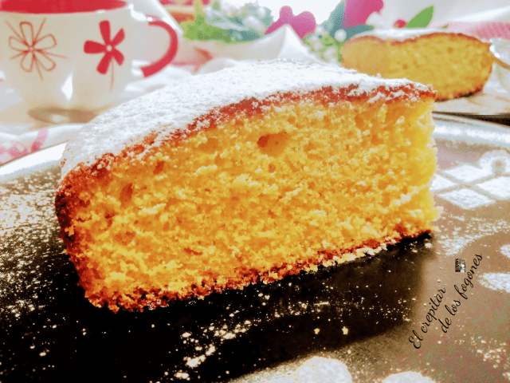

TAMIZAR LA HARINA
Para conseguir que las masas de los bizcochos sean suaves,
ligeras y esponjosas tamizar siempre la harina. Agregarla a la preparación en último lugar,
preferiblemente a mano, necesitaremos unos cuantos minutos más pero el resultado es
espléndido.